Moretime Expeditions
Moretime Expeditions, a brand of sea travel on unique routes, forms a community of "ambassadors of the sea" who seek to discover and share at any age. It elevates individuals into a new dimension, fostering self-exploration amidst the endless expanse of water. Polar adventures on sailing ships turn participants into "Ambassadors of the Sea," revealing hidden facets of themselves and the world. The brand's name, symbolized by a vertically mirrored "M," adds precious moments to adventures, emphasizing each episode on the journey and deepening self-discovery.
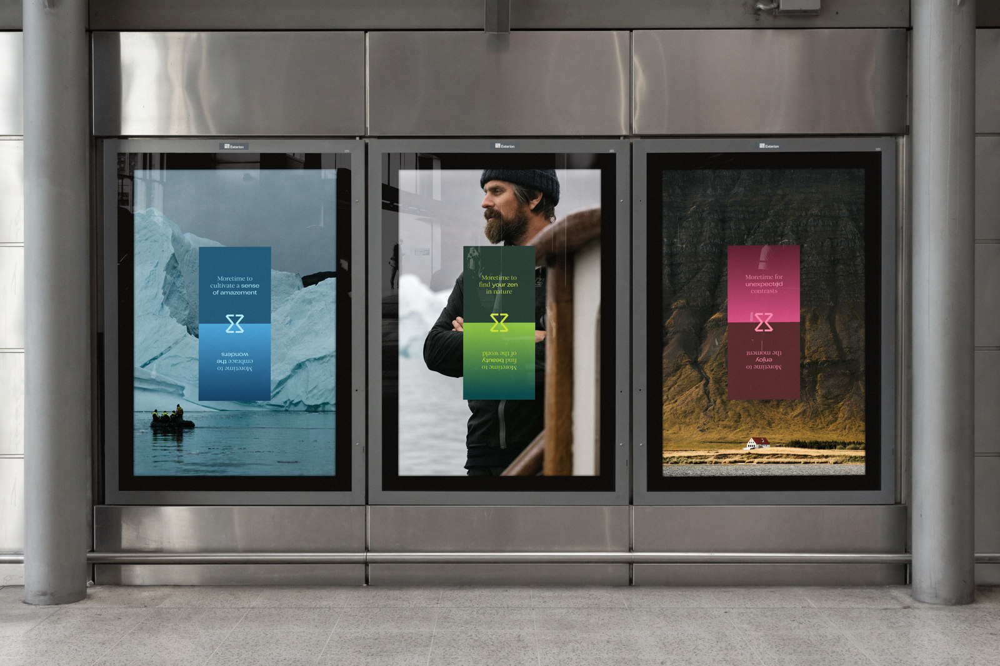
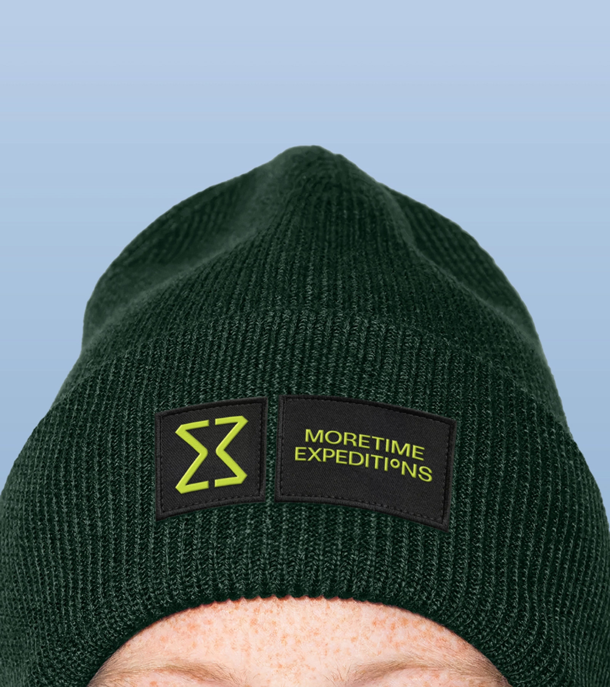
Purpose: Launch of a new brand focused on broadening the geography of the audience. Challenge: Develop an identity using an unusual colour for the ball. Reflect: reliability, competence, brightness and romanticism. Focus on emotions and feelings. Brand Mission: To open to people the world of the sea, the world of freedom, of infinity. Build a community of pioneers. To help people rise above everyday life, to perceive the new, to awaken the spirit of discovery and adventure. Brand Vision: Moretime allows people to be protagonists. To break out of the routine, to discover the unknown, to surpass themselves, to take the helm, to manage the sails and tackles, to feel like the protagonist of an adventure book. Brand Essence: Moretime is about time. A time of discovery. A time to delve into the depths of consciousness. A time for the infinite horizon and simple eternal values. A time of permafrost.
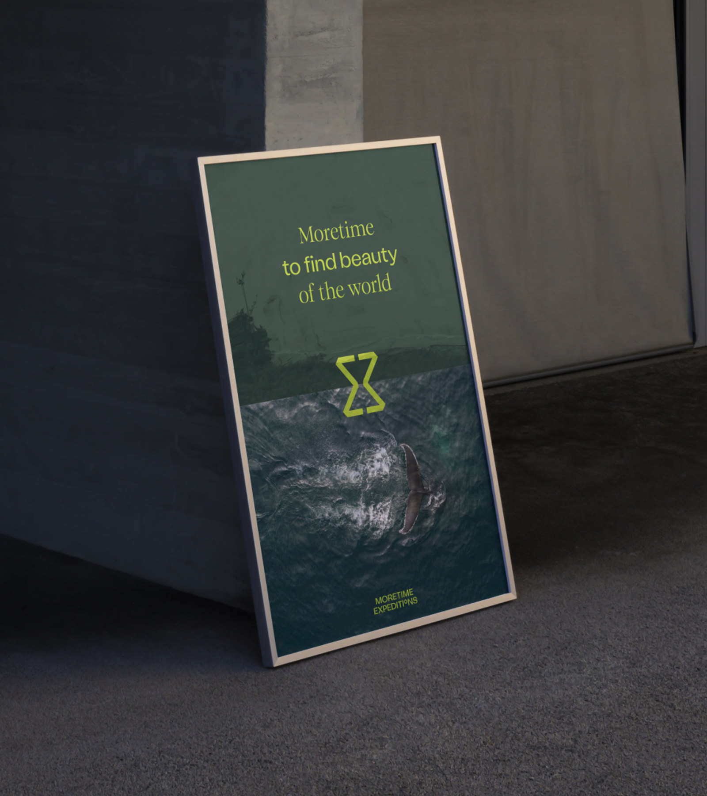
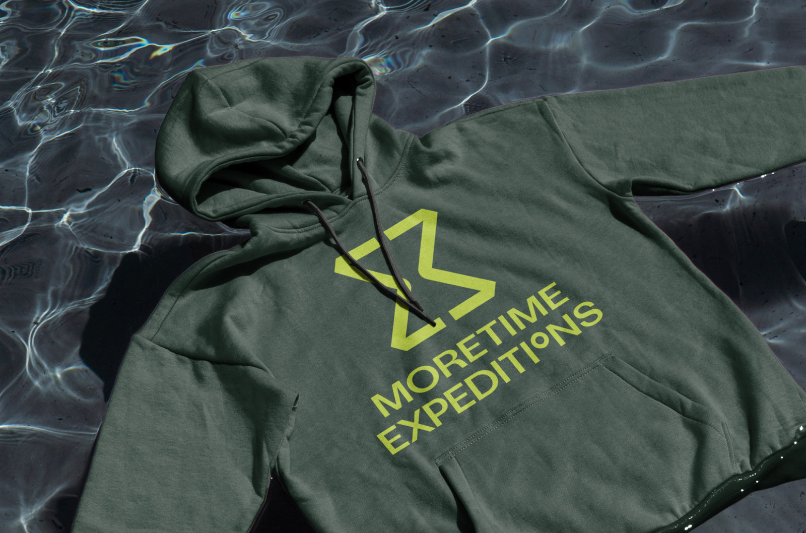
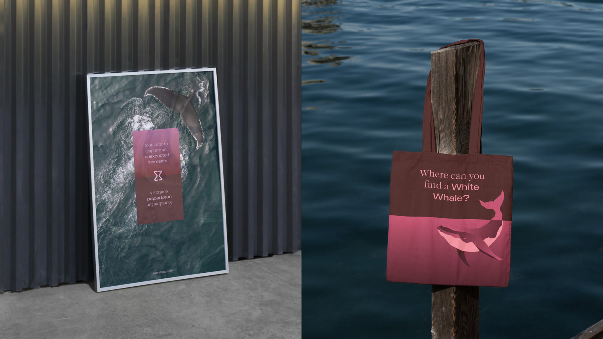
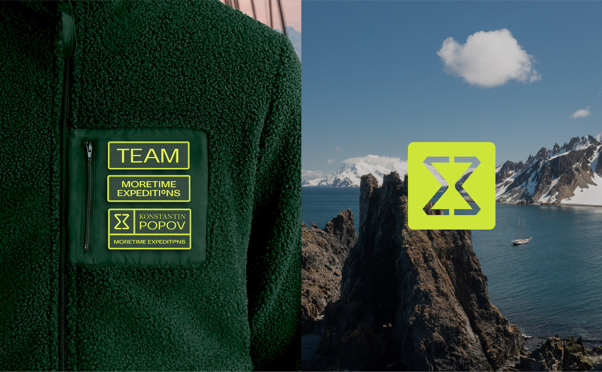
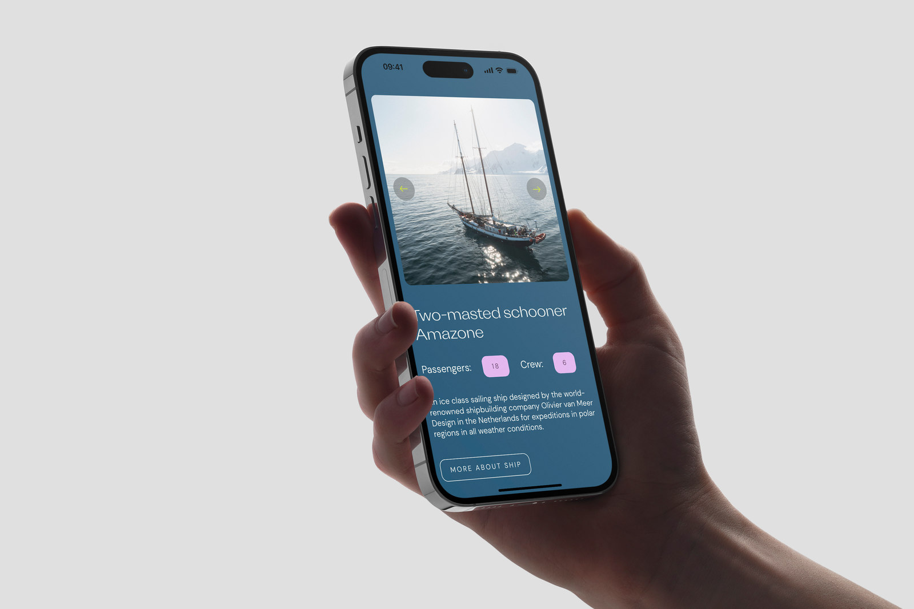
The ideas embedded in the sign and identity needed to be transferred to the website. In it, the developed graphic elements acquired a clear structure, and a logic of colors appeared. Atoms and molecules were used to create a large number of pages, the resulting techniques were easy to scale and reassemble for tasks. The most voluminous pages are the pages of destinations and expeditions; in order to maintain the user’s focus, a visual alternation of blocks is made. The information is structured and similar blocks of text are collected into cards: they are easy to adapt to devices and the page looks more compact.
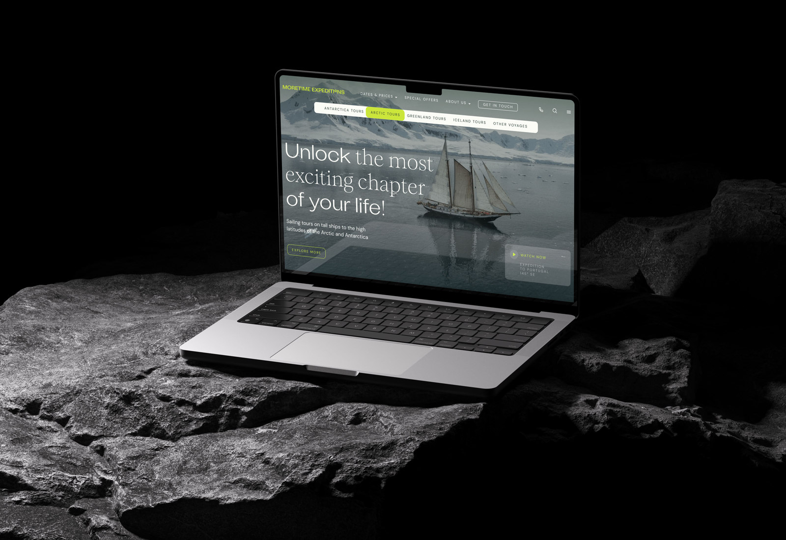
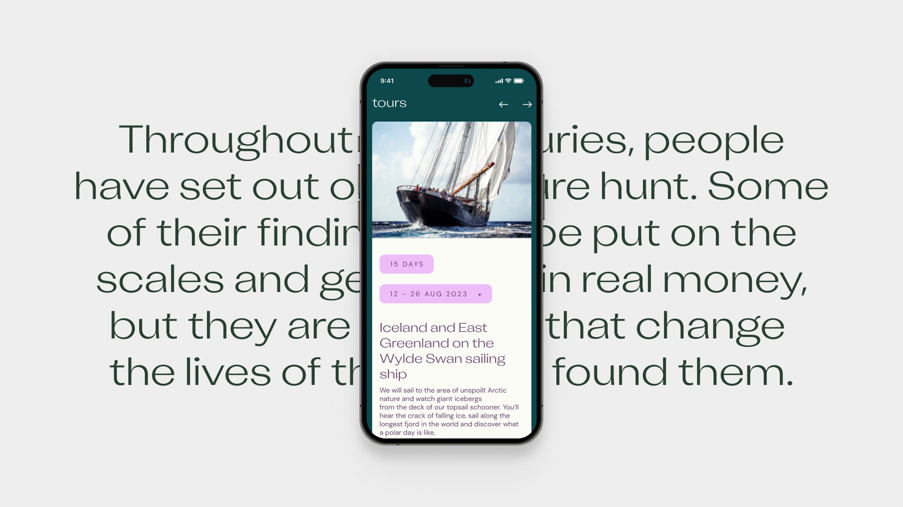
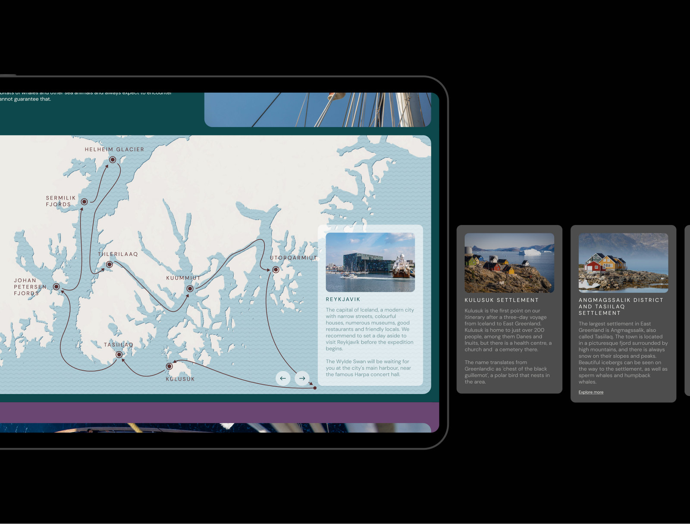
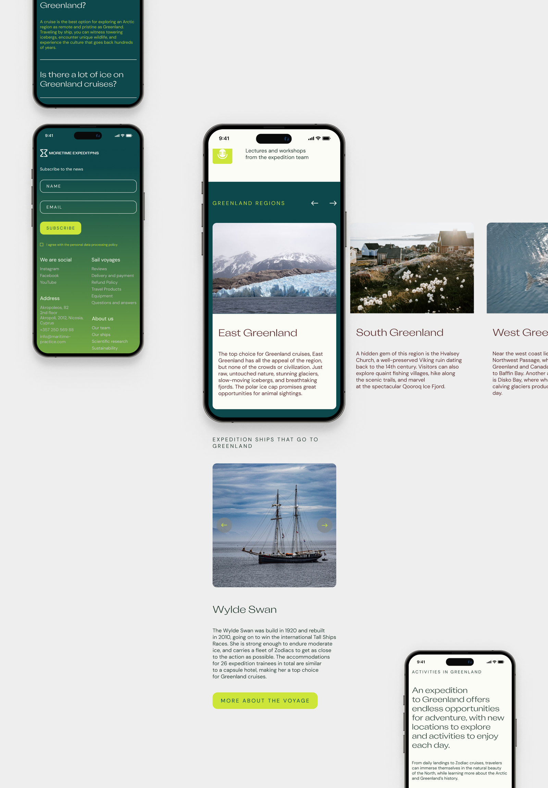
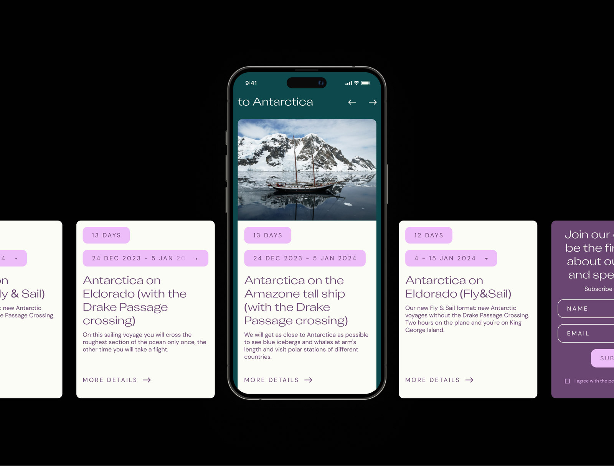
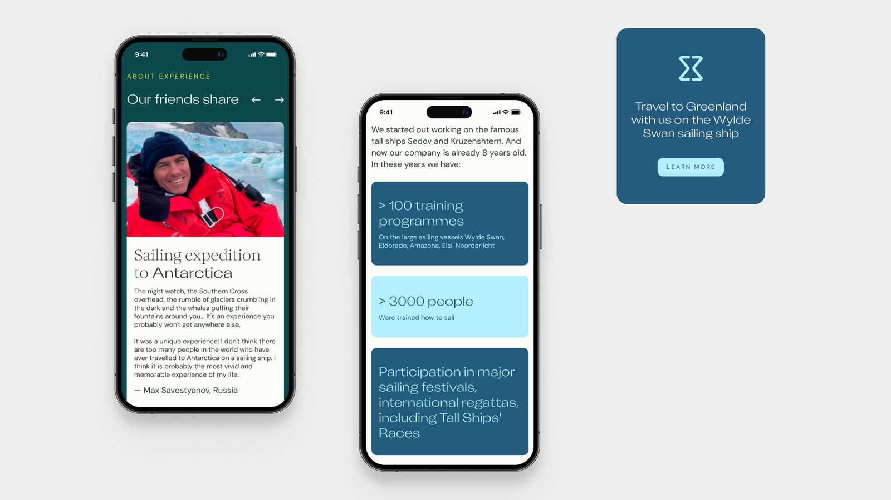
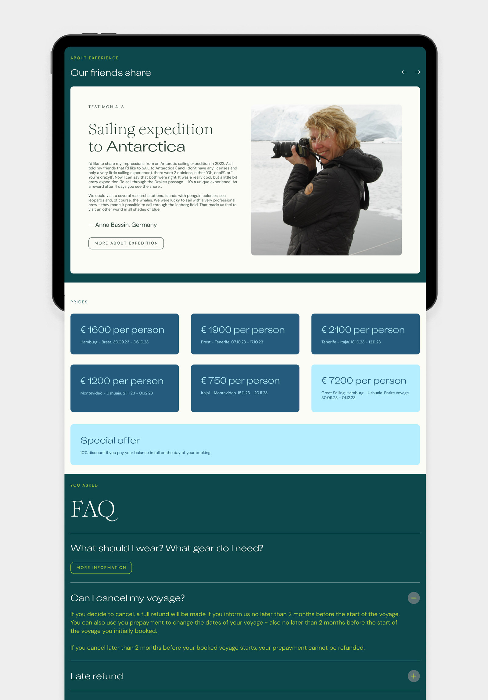